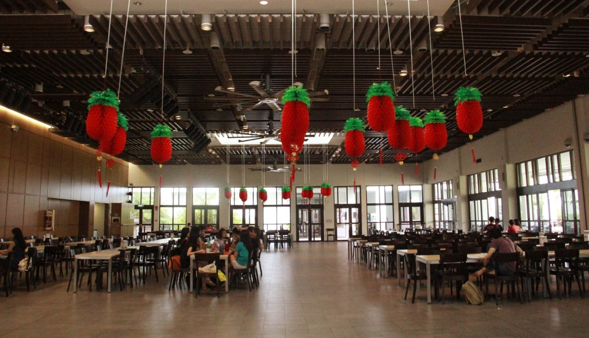

Dining is an integral part of living in a CAPT. More often than not, spontaneous conversations along the corridor or over the dining table add to the warmth and vibrancy of college life. Mealtimes are also occasions to meet Fellows (and their families!) informally and chat about anything under the sun.
The dining hall at CAPT serves nutritious food from a range of cuisines, including Asian, Western, Malay (Halal), Indian (Halal) and Vegetarian. The meal plan includes breakfasts on Mondays to Saturdays and dinners on Sundays to Fridays.

The dining hall organises regular theme nights to celebrate special occasions such as Hari Raya, Chinese New Year, Deepavali and many more! The College comes together for two formal dinner. At the beginning of the academic year, we welcome freshmen, exchange students and returning seniors to the College and at the end of the academic year, the dinner serves as a platform to appreciate those who have contributed to the College.
